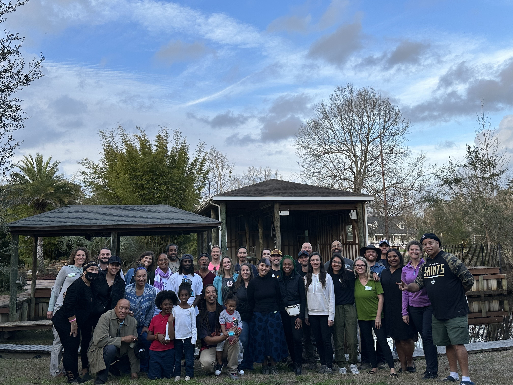
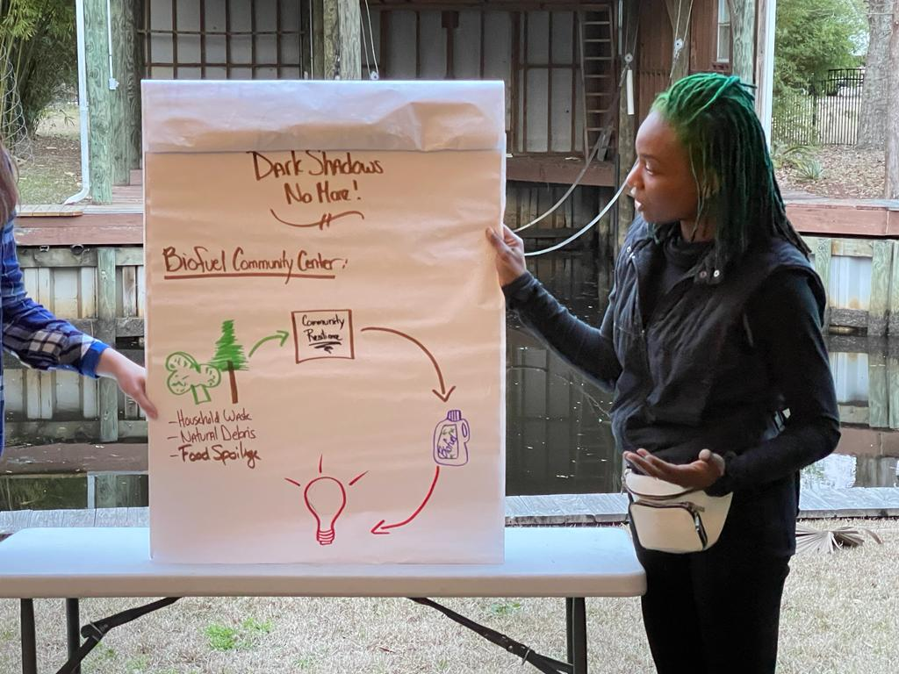

Pigment-based color. Cells mechanically expand or contract to reveal or hide the dye.
Iridophores
Structural color from stacked thin-film reflectors. Wavelengths interfere; shimmer emerges.
Photonic crystals
Color from 3D periodic nanostructures. Wavelengths reflect from geometry — pure, angle-independent.
Three mechanisms. Only one uses pigment.
hexagonal self-organization
In the Namib, grasses self-organize into hexagons.
Two opposite hydrologies. The same hexagonal answer.
spatial signature · biomass vs soil water
After Getzin et al., PNAS 2016 — Discovery of fairy circles in Australia supports self-organization theory.
Why hexagons
This pattern emerges from diffusion modeling — math that describes how
water moves through soil toward thirsty roots. The same math also produces
dots·stripes·hexagons
— depending on conditions.
Hexagons aren't magical. They're what symmetric competition produces in 2D —
the same reason honeycombs, bubble rafts, and stacked oranges find their packing.
Pattern = scalar field + feedback loop.
A pattern you'll see again.
What about social innovation?
The fairy circle works because sand is uniform. Water moves down a gradient
with nothing in its way. Real human systems aren't like that.
They have barriers — laws, institutions, geographies, accumulations of power.
Diffusion alone doesn't get resources past those walls.
So biomimicry asks a different question:
how does nature solve the barrier problem?
A hydrogen atom needs to move from a fatty acid to an iron-based site inside
the SLO enzyme. Classical physics says the hydrogen would have to climb
an energy hill it can't afford. But hydrogen can tunnel through that
hill — it behaves as both particle and wave.
Tunneling only works when the two sides are very close and their
vibrational frequencies match. So the enzyme self-organizes the
conditions: it channels water inward to heat the iron, triggers a coordinated
"protein quake" that briefly aligns its shape, and tunes the donor and acceptor
into resonance — a tunnel-ready state.
What looked like a barrier becomes a passage. Not because the wall moved,
but because the system found focus.
Abstracted design principle
Use focused energy and structural alignment to create conditions where
pathways naturally emerge — even when traditional routes
are unavailable.
Diagram · Zuciya 2025
What might this look like in human systems?
That's the question I'd like to leave open for you.
When you encounter a barrier that diffusion can't cross — in your work,
your community, your craft — what would it mean to find the
tunnel-ready state? Where is the focused energy?
What needs to come into alignment? Where is the matched vibration?
I've sketched five possibilities at the bottom of this page,
drawn from my own work on this enzyme. They're prompts, not prescriptions.
Different problems want different organisms.
The fairy circle was the right model for one kind of question.
The soybean enzyme is the right model for another.
The practitioner's job is to know which is which.
And this has all led me to
entangled intelligence.
02Smell-as-listening
Every language and culture and lived experience has a lens.
"
You can't separate language
from the emotional and conceptual world it carries.
— Ngũgĩ wa Thiong'o
03A hurricane
The night before
We had the brief. We didn't yet have the community.
01
A brief arrives
02
Pre-baked ideas in our sleep

The answer was hiding inside
the struggle.
There's a pattern here. We'll come back to it.
04The flinch
We put things in categories.
Mold is gross.Silence is awkward.
And the cultural categories themselves make our
mirror neurons
feel like a misfire.
mirror neurons · attuning across the gap
Same pattern again. The shape will have a name soon.
05Feedback loops
Everything you just saw was a feedback loop.
The smell categories. The mold field. The flinch in your body. The hexagons in the desert.
Different scales, different substrates, same pattern.
I want to give you the vocabulary. Then I want to give you the
tool you can take home.
With deep gratitude to the late Donella Meadows, who taught generations of us to see systems.
06Themed entertainment
Immersive loops · engineered wonder.
Two crafts. Two ways of engineering the same thing — your willingness to stay.
Beat one
Meow Wolf — the loop in the space.
Walk into The House of Eternal Return and there's no map.
No wrong choices. The floor plan itself is a kind of neural network —
every room connects to other rooms, and every choice you make
rewards curiosity with more space to be curious in.
That's a reinforcing loop, and it lives in the architecture.
The building is the loop. You're inside it.
The variable that lives inside you is the exploration itself —
your willingness to keep moving. The variable that lives outside you
is the spatial payoff the building delivers. The loop runs between you and the room.
A neural network you can walk through.
Meow Wolf builds the loop in the space.
Disney builds nested loops in the body —
one holding belief steady, one amplifying wonder inside each moment.
Beat two
Disney Imagineering — the loop in the body.
I spent years as a Disney Imagineer engineering perceptual experiences —
illusions the eye had no prior reference for, physicality the body had no prior model for.
What I learned is that immersive entertainment runs two loops at once, at different scales.
B Balancing — the experience
Multisensory immersion is the equilibrium being held — built from
scent machines, production design, ride motion, animatronics, engineered illusions.
Drift is what the audience's analytical mind always does, pulling away
from belief. Correction is the next engineered cue, pulling them back.
Imagineering is the discipline of making each correction land before drift completes.
R Reinforcing — inside each moment
Inside each correction, a smaller loop runs in the audience's nervous system.
Stimulus is the engineered sensory input. Construction is the brain
building an interpretation in real time, because the prior model doesn't cover this
input. Attention is what gets captured by the construction work — and sharper
attention makes the next stimulus land deeper. Wonder amplifies inside the held state.
inside each moment of immersion, a smaller loop runs
Bounded space. Unbounded depth.
Both crafts are engineering the audience's permission to stay.
Both run on the same systems-thinking principles you just learned to see.
Once you can name the loop, you can build the loop.
07The practice
If you take three things home from today —
01
Look at things up close.
Closer than your training thinks is useful. Stay long enough for the dead cactus
to show you its S-curve. Stay long enough for the spore field to bloom. The thing
you've decided is nothing has been waiting for someone to look.
02
Pause to find the loops.
Most of what frustrates you is a symptom of a feedback loop you haven't named.
Sit with the symptom until you can see the loop it sits inside. Then ask
what kind, and what nature does with loops like that.
03
Push beyond the frameworks you inherited.
The daily one. The cultural one. The linguistic one. They are real — they
shaped what you can perceive. They are also not the whole world. The license
you inherited is real. So is your capacity to widen it.
Practiced as
Asking nature basic functional questions.
How does nature distribute water?
How does nature respond to disturbance?
How does nature store energy?
How does nature regulate temperature?
How does nature self-organize?
How does nature recycle waste?
specimens from the desert
LIVE · UNDER THE SCOPE
under the scope
image pocket
opposite
image pocket
other
That's the practice of superposition.
Holding the moment open long enough for what's actually there to show itself.
Thank you.
AppendixThe full twelve leverage points
Donella Meadows' complete hierarchy — places to intervene in a system, in increasing order of leverage.
The talk compressed these to six for time; the full list is below for anyone who wants to go deeper.
11The size of buffers and stabilizing stocksrelative to their flows
10The structure of material stocks and flowstransport networks, population age structures
9The length of delaysrelative to the rate of system change
8The strength of balancing feedback loopsrelative to the impact they try to correct
7The gain around driving reinforcing feedback loopsrunaway growth or decline
6The structure of information flowswho has access to what information
5The rules of the systemincentives, punishments, constraints
4The power to add, change, evolve, or self-organize system structureadaptation, evolution, learning
3The goals of the systemwhat the system is trying to do
2The mindset or paradigm out of which the system arisesshared ideas, assumptions, beliefs
1The power to transcend paradigmsstaying unattached to any paradigm — the deepest leverage
Source — Meadows, D. (1999). Leverage Points: Places to Intervene in a System. The Sustainability Institute.
AppendixFive application sketches from the SLO report
During the social innovation case study, I invited you to ask the question yourself.
For those who want a starting place, here are five sketches from my biomimicry report
on soybean lipoxygenase — prompts, not prescriptions, for how the
focused energy + structural alignment design principle might land in human systems.
Heat + Precision for Policy Change
Strategically combine mass public pressure ("heat") with targeted legal or activist
alignment (focused effort) to push legislation through resistant systems.
Crisis Navigation Systems
Design emergency response networks that use bursts of community energy (heat)
and pre-aligned micro-networks (quantum tunneling) to bypass bureaucratic delays
during disasters.
Micro-mentorship Models
Create systems where well-timed, focused mentorship (thermal spark + alignment)
helps individuals "leap" through barriers like lack of access, confidence,
opportunity, or finances.
Rapid-Access Legal Aid Pods
Set up neighborhood "justice nodes" that offer high-impact, timely, and focused
legal advice to people facing systemic obstacles. This provides just enough
support to move past critical blocks.
Barrier-Busting Innovation Labs
Create cross-disciplinary labs that simulate "tunneling-ready states" by
reducing friction (streamlining tools and workflows), syncing effort, and
leveraging bursts of energy to solve social challenges.
Source — Zuciya, G. (2025). Soybean Lipoxygenase Quantum Tunneling — A Biomimicry Report.
Mechanism diagrams reproduced from the same.
Branch · The field of plurals
An easy entry
In Russian, there is no single word for blue.
goluboy
light blue
siniy
dark blue
Russian speakers discriminate between these two faster than English speakers.
Different words produce different perception — measurably, in lab settings.
Boroditsky et al. · PNAS · 2007
The same act, three languages
Smell is one thing in English. It is many things elsewhere.
Word
to smell
English
five senses
Meaning
One of five discrete senses. Codified by Aristotle. Treated as biology.
Example
"I smell something."
Word
monkō
Japanese · 聞香
"listening to fragrance"
Meaning
A 500-year ceremonial practice called kōdō, the way of fragrance.
Example
"Listen to the incense."
Word
nghe
Vietnamese
/ŋɛ/
Meaning
To hear, to attend. Extends across senses.
Example
"I hear that flower."
Languages carve perception. Smell may be no exception —
and the science is starting to agree.
The science
We may not be smelling the shape of molecules.
We may be detecting their vibration.
Luca Turin, 1996. Olfactory receptors may
register molecular frequency through quantum tunneling at the
receptor — the nose as spectrometer. The science is contested,
and still standing nearly thirty years later.
And in Yoruba
gbọ́ — to hear, to perceive, to understand. One verb across many sensory and cognitive acts. Another language refusing the carve-up.
Try this summer
Find one sense your language doesn't have a word for.
Try "listening" to a fragrance this week.
Solution pitch 1
We brought the obvious answer.
"
Baby, you'll have me dead in the water
depending on solar.
— A community member, the morning after (echoing Bonnie Raitt, 1991)
What we heard
The chaos started arranging itself.
The community wasn't dealing with twenty unrelated problems. They were dealing with two.
Biowaste
Things that need handling
Spoiling fridge contents
Dumped grocery inventory
Fallen trees
Yard debris
Downed branches
Food scraps
Need gas to power
Things that need fueling
Boats
Chainsaws
Generators
Two functions. One waste stream.
The shape of the answer was beginning to appear.
A different question
What is thriving during a hurricane?
Move your cursor across the field. Let it spread.
Mold.
The thing everyone calls gross. The thing already doing what the community
needed to do — harvest biological waste from disturbance, and convert
it into thriving life. The teacher had been there all along.
Mold is not the answer. Mold is the teacher.
Translating the mechanism.
Mold
the teacher
Biofuel station
the design
Packed with nutrients
Dormant. Sealed. Waiting for the right conditions.
Stored biological waste
Collected throughout the year. Sealed. Waiting.
Damp conditions arrive
Rain triggers the spore. The wall opens. Activation begins.
The storm arrives
Disturbance triggers the system. Stored energy is released.
Harvests + thrives
Converts surrounding biological waste into colony growth.
Powers the community
Stored energy flows to chainsaws, boats, and generators.
Same function. Different substrate. That's biomimicry.

Experiential carve-up
Same nervous system. Three different protocols for what to do with it.
Anglo-American
contemporary professional
Mediterranean
southern European traditions
Yoruba
West African — also gbọ́
Joy
how celebration is held
A measured smile. A small fist-pump if alone. Too much looks unprofessional.
Hands in the air. Voices raised. Strangers pulled into the moment. Volume is honor.
Drumming, dancing, call-and-response. The community moves the joy together.
Anger
how confrontation is held
Stay calm. Lower the voice. Document. Anger expressed openly = loss of credibility.
Loud disagreement is intimacy. Voices rise, then dinner continues. Restraint reads as distance.
Anger held within community structure. Elders mediate. Expression is shaped by relational role.
Cheek kisses, long embraces, men walking arm in arm. Touch is the language.
Same-sex friends holding hands in public is unremarkable. Closeness is a relational fact, not a romantic claim.
Awe
how wonder is met
Briefly noted. "Wow." Then back to work. Sustained awe reads as childlike or unproductive.
Long looks at art, food, mountains. Wonder slows the meal. Permitted as a form of attention.
Awe is held within spiritual and ancestral frame. Wonder has ceremony. Reverence is a public practice.
Same biology in every body in this room. Different cultural license for what to do when it activates.
A moment, embodied
A friend was telling me a story. Mid-sentence, he started crying.
I felt a flicker of confusion. Then the urge to do something to collapse that moment by solving it quickly. A tissue. A pat on the back. A question to redirect. Anything to dry the tears that were on display in public.
That flicker. That urge. Those weren't my biology. My mirror neurons were doing exactly what they evolved to do — attune to his state, feel a version of his feeling, hold the moment with him.
What flinched was my training.
Two hundred years ago, in many of the rooms my ancestors lived in, that moment would have been received as a gift — a deepening of intimacy, a signal to slow down, an invitation to be witnessed. Today, in the rooms I work in, it is most often received as a problem to be managed.
The biology hasn't changed. The license has.
I stayed quiet. I let him cry. I felt the flinch in my body and chose not to act on it. That is the practice I am building now — for myself, and for the rooms I want to help build.
Your turn
Take this into your body.
Notice
Of the four emotions you just read about — joy, anger, affection, awe — which one feels the most free in your body, right now?
Which one feels the most constricted?
Don't overthink it. The first answer is usually true.
Locate
Take the constricted one. Ask what taught you the license you currently use.
A profession. A culture. A century. A room.
Not as accusation. As inheritance.
The license you inherited is real. So is your capacity to widen it.
Two patterns nature uses everywhere
Reinforcing & balancing.
External · out in the worldInternal · inside the person
R Reinforcing
Amplifying. Runaway. Growth — or collapse.
Each variable amplifies the next. The loop runs away from where it started. The longer it runs, the further it goes.
B Balancing
Stabilizing. Regulating. Seeking equilibrium.
One variable counteracts the next. The loop pulls itself back toward a stable point. It holds, even under pressure.
Where you saw them today.
B Balancing
Fairy circles
Gap moisture feeds vegetation at the edge. Roots draw water inward.
The gap stabilizes.
R Reinforcing
The hurricane & the mold
Disturbance produces waste. Waste feeds decomposition. Decomposition produces
more conditions for the next round.
R Reinforcing
The flinch
Training produces the reflex. The reflex confirms the training.
Next time it fires faster.
The move that distinguishes practitioners
Find the loop before you intervene.
Most "problems" are symptoms. The symptom sits inside a loop.
If you intervene at the symptom, you fight the loop — and the loop wins. It always wins, because the
loop is structural and you are episodic.
Sit with the symptom long enough to see the loop it's part of.
Then you have options the symptom alone never offered.
Louisiana, after the storm
The community kept trying to solve the symptom — "we need more fuel".
The biomimicry move was to step back and ask what's the loop?
Disturbance → biological waste → decomposition → conditions for more waste.
A reinforcing loop they were sitting in the middle of.
Mold knew it. We didn't. Until we did.
Donella Meadows — places to intervene in a system
Not all leverage is equal.
Where you push in a system matters far more than how hard you push.
Meadows compressed a lifetime of systems work into a hierarchy of leverage points.
Here are the levels, from least leverage to most.
1Parametersnumbers, subsidies, taxes
2Structurestocks, flows, buffers, delays
3Feedback loopsreinforcing & balancing — what you just learned
4Rulesincentives, punishments, constraints
5Goalswhat the system is trying to do
6Paradigmsthe mindset out of which the system arose
The deepest leverage isn't a parameter. It's the way you see.
Which is what biomimicry has been doing this whole time — shifting the paradigm
from dominate nature to learn from nature. A change in mindset that ripples
down through every rung below.
Meadows named twelve levels. We compressed to six for time. See the full list at the bottom of this page.
The practice
Three steps. You already know how.
01
Find the loop.
Whatever you're frustrated by, stuck inside, or trying to design —
it's almost certainly a loop. Map it. Even roughly.
02
Name what kind.
Is it amplifying or stabilizing? R or B?
The intervention is different for each.
03
Ask what nature does with loops like that.
That's biomimicry. 3.8 billion years of R&D on this exact shape of problem.
Somewhere, an organism has solved it.
Once you see the loops, you can't unsee them. That's the gift.